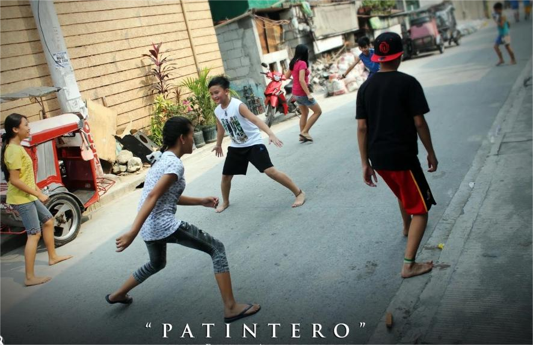
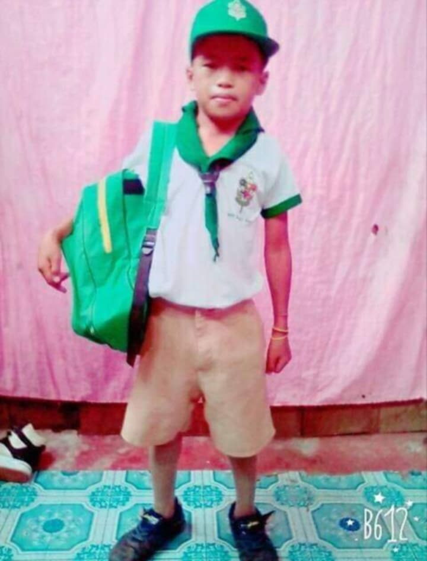

×
My Childhood


Actually, I'm friendly and had many friends.
We played together like racing cars and toy guns
"gera-gera" and enjoyed games like
"patintero". I also had the experience
of joining the boyscout when i was grade 4.
My Teenage
My teenage life was different, I became addicted to
computer games like Rules of Survival and Crossfire.
During the COVID-19 pandemic, I started play a Mobile games "Mobile Legend".
My Adulthood
In my current life, I focus on healthy activities such jogging, playing Sepak Takraw
and swimming. I am the Sepak Takraw player also in SMCC since last year,
and we're 3rd place on CEAP Regional 2025, and right now i focus on my dreams and
improving myself to be better version of me.